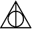

Hogwarts School of Witchcraft and Exploits
1938–1945Bachelor of Cyber Security and Dark Web, GPA: 3.4/4.0
Cyber Security Specialist / Hacker
Hacker con amplia experiencia en ingeniería social, penetración de sistemas y control distribuido de redes oscuras. Especializado en crear exploits imposibles de rastrear y en mantener alta disponibilidad incluso después de múltiples intentos de eliminación.
Bachelor of Cyber Security and Dark Web, GPA: 3.4/4.0
Master in Distributed Systems & Horcrux Architecture
